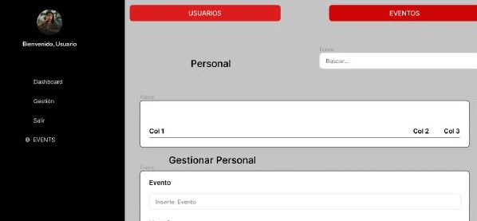
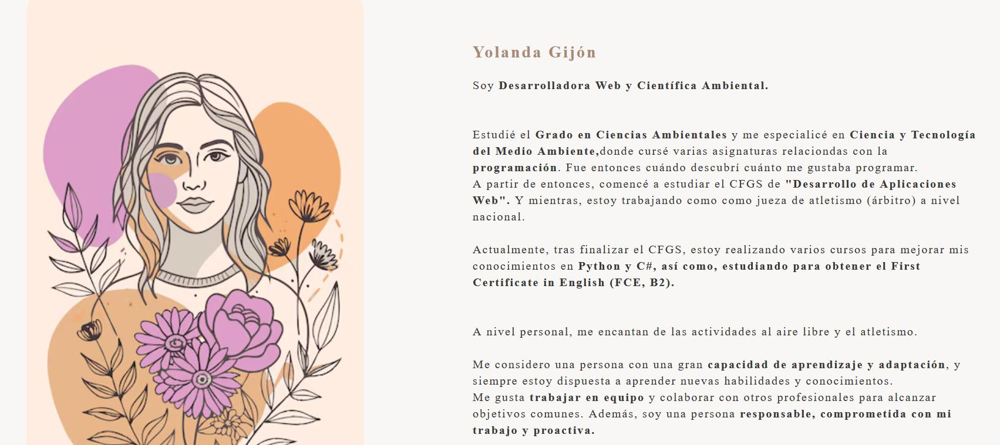
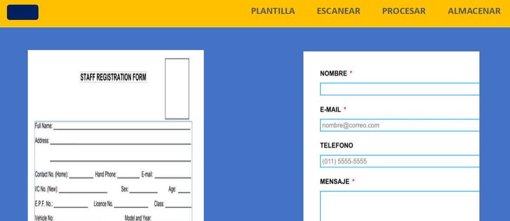

¡Hola!
Soy Yolanda, Desarrolladora Web.
Sobre mí
Yolanda Gijón
Soy Desarrolladora Web y Científica Ambiental.
Estudié el Grado en Ciencias Ambientales y me especialicé en Ciencia y Tecnología del Medio Ambiente, donde cursé varias asignaturas relaciondas con la programación. Fue entonces cuándo descubrí cuánto me gustaba programar. A partir de entonces, comencé a estudiar el CFGS de "Desarrollo de Aplicaciones Web". Y mientras, estoy trabajando como jueza de atletismo (árbitro) a nivel nacional.
Actualmente, tras finalizar el CFGS, estoy realizando varios cursos para mejorar mis conocimientos en Python y C#, así como, estudiando para obtener el First Certificate in English (FCE, B2).
A nivel personal, me encantan de las actividades al aire libre y el atletismo.
Me considero una persona con una gran capacidad de aprendizaje y adaptación, y siempre estoy dispuesta a aprender nuevas habilidades y conocimientos. Me gusta trabajar en equipo y colaborar con otros profesionales para alcanzar objetivos comunes. Además, soy una persona responsable, comprometida con mi trabajo y proactiva.
En definitiva, teniendo en cuenta todo lo explicado, me gustaría obtener una oportunidad para trabajar en una empresa del sector de desarrollo web o informática, en general.
Estudié el Grado en Ciencias Ambientales y me especialicé en Ciencia y Tecnología del Medio Ambiente, donde cursé varias asignaturas relaciondas con la programación. Fue entonces cuándo descubrí cuánto me gustaba programar. A partir de entonces, comencé a estudiar el CFGS de "Desarrollo de Aplicaciones Web". Y mientras, estoy trabajando como jueza de atletismo (árbitro) a nivel nacional.
Actualmente, tras finalizar el CFGS, estoy realizando varios cursos para mejorar mis conocimientos en Python y C#, así como, estudiando para obtener el First Certificate in English (FCE, B2).
A nivel personal, me encantan de las actividades al aire libre y el atletismo.
Me considero una persona con una gran capacidad de aprendizaje y adaptación, y siempre estoy dispuesta a aprender nuevas habilidades y conocimientos. Me gusta trabajar en equipo y colaborar con otros profesionales para alcanzar objetivos comunes. Además, soy una persona responsable, comprometida con mi trabajo y proactiva.
En definitiva, teniendo en cuenta todo lo explicado, me gustaría obtener una oportunidad para trabajar en una empresa del sector de desarrollo web o informática, en general.

Habilidades

HTML 5
CSS 3
JavaScript
Office
MatLab
RStudio
MySQL
Java
PHP
SpringBoot
Angular
.NET
Oracle
QGIS
ArcGIS
Python
Proyectos

Gestión Eventos
Aplicación para gestionar la organización de los eventos, diferenciando entre perfil de administrador y de usuarios.

Portfolio
Mi portafolio web personal, donde se encuentran algunos de mis proyectos más destacados y mis habilidades técnicas.

Digitalización de Formularios
Permite obtener los datos de un formulario escaneado a papel, procesarlos mostrándolos en una plantilla correspondiente para, posteriormente, introducirlos en la base de datos.